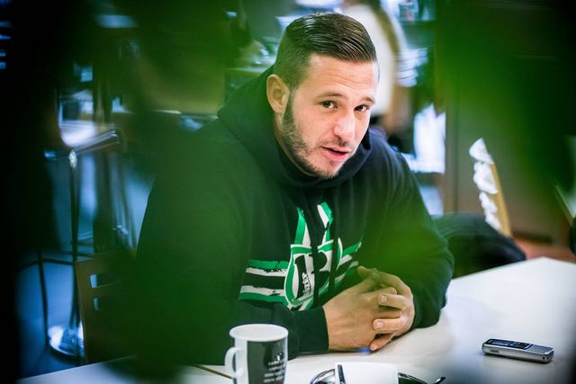

Interview with Green Dragons Ferencvaros' capo
Why they decided to boycott and why they returned last week?
ADMIN / Interviews / 25.09.2018 / Images: Hooliganstv.com, Ultra-tifo.net, Ferencvaros / Source: 24.hu
When was the last time you’ve visited a Ferencvaros game int he NB1 (Hungarian League)?
- About 3 years and a half year ago, in the Puskas Stadium (old stadium).
What did happen after that?
- When the new stadium was finished, they made mandatory the vein scanner system. We had the feeling we’ve been left out from this decision meanwhile we had discussion about every other topics. The rest is history.
So you did not have problem especially with the scanning system but you did not like that the club left out ultras from this discussion?
- That was the last drop in the glass. We did not agree with many decisions of the club but we were thinking these issues could be solved by discussion. However the scanning system was not that category.
What did take 3 and half years long?
- Both sides had to see we need common things which are acceptable for the club and fans too. I’ve been thinking in a 5 years period so it ended before I expected.
What was the worst period/moment?
- Celebration of the Championship winning, when we dominated the league. It took many years to win the championship again but we couldn’t celebrate with the team together. It really hurt me I’ve felt like a piece of my heart was lost.
One Championship title, one second, one third place and three Cup winning was missed.
- Not a good feeling to hear that, I hope we can forget that time very soon.
How much could you like the championship winning team?
- We never loved Ferencvaros because of the players, we love the club and the players are part of it.
What was the turning point which let you come back to the stadium?
- It was March or April when the last phase of discussion started. I couldn’t mention one moment. 3 and half years made this happen.
At least one moment could be mentioned.
- It was important that we could discuss with the president of FTC, Mr. Kubatov and not the acting director, Mr. Nyíri.
Who did open first for the other party?
After a while both sides found the other one. It wasn’t like that one side did not want to discuss meanwhile the other one always were looking for discussion.
Parts of the return agreement:
- Scanning is not mandatory in ultras’ sector (called ’Sector B’ in Hungary), only for 500 people.
- There are two type of cards. Normal card with scanning and B Category Card for ultras sectors. For B Category Cards your picture and datas are required only scanning optional.
- Any conflict, revenge or violence against normal card users forbidden.
- Both sides against any violence inside the stadium.
- According the agreement the stadium rules has been modified by the recommendations of ultras!
- New rules include the new type of category and penalties for actions against the rules.
- Ultras are represented in the council which oversee the bans and has the right to appeal against decisions.
- Management accepted that they can choose an own mascot for Sector B (there was a huge scandal when management changed the mascot of the club).
- Leaders of ultras and management of the club meets at least 4 times a year.
Your position was never in danger because of the long boycott?
- Never felt like this.
Didn’t you feel like that many would like to return to the Tribune but you were the major obstacle to return?
- You could hear radical opinions. One side said we already should have return, why are we negotiate? The other, more radical, side said we shouldn’t negotiate with Kubatov and ultras should not return until he is the president.
How much opinions were like that?
- Not much. Radical opinion can be louder but they were not significant.
How much people were NOT going to games because of your fight with the club?
- Hard to tell. At the start many people went to the games but thanks to the boring atmosphere without ultras more and more people did not go. On our events 3 to 10 thousand people were represented. Like in the last one against Csepel.
There could be some people who were going the games…
- Possible. Probably there are people who did not go to games but got tired of it and accepted the scanning system. Not important to say a number, when we will get back we will see how the average attendances will grow. Of course not the first few games will be important, because there will be full house but on a longer period we will see the change.
What was the most important you did not relent?
- One was the stadium rules which allows us to support our team as we did in the old stadium. Rules shouldn’t be exaggerated.
What does it mean?
- It means fanaticism should be forced out of the tribune. If the new stadium rules would not happen or the joint council would not be made – where ultras are part of the council and can oversee the bans – an agreement would never happen. We thought it is important that supporters should be considered as a part of the club. If these would not happen then the optional scanning system wouldn’t be enough to our return. I think we have smaller or bigger success on every field.
Who had to scan in the ultras sector?
- According to the agreement, 500 people had to scan. Also it was mandatory for leaders who were represented on the negotiation.
Who are the others (the other 500)?
- I don’t know, no one was forced.
Did you have the 500?
- Yes.
Is there anybody who is banned from the stadium?
- If we ban someone…. Sorry, if they ban, I won’t ban anybody. So if someone banned and his ban is expired he can return to the stadium but with scanning himself. But he can come back to the ultras sector.
All tickets were sold to the ultras sector 10 days ago. If someone made the Supporter’s card later he couldn’t enter the stadium? (There is two type of cards now, one for normal fans and one for B-Sector or ultras sector, I’m not sure if scanning mandatory for normal fans or not. I think it is only optional in ultras sector – translator)
For the first game all the tickets were taken for the B –Sector Card users. It was necessary because if we would make our return public, people who had normal cards could buy all the tickets into ultras’ sector and we would have the risk to not have a place to return.
So if someone was using the ultras’ sector for the last 3 years he has a disadvantage?
- I don’t think so. He could buy his ticket until the public statement.
Everyone returns?
- Probably not. There were always supporters who did not like anything. For many supporters even the fan card not acceptable.
Acceptable for you?
- We also think it is unnecessary for identification of supporters, this is not a major issue in Hungarian football. But we already accepted it and we went to games. so we couldn’t say that we are not returning until everything ruled out. But there are some people who has more radical opinion about it. Not because they are criminals, but their principles/mentality can not meet the fact that you have to give your personal datas. Western Europe mentioned many times as an example but in many western countries there is no fan card.
Do you agree that there are people who shouldn’t enter the stadium?
- We don’t say that troublemakers should be allowed to the stadium. Should be order inside the stadium, it shouldn’t be about troubles or incidents. There shouldn’t be fight, dropping i non the tribune or enter the field. But we think Hungarian rules are exaggerated.
You can read many places that voting is coming and it is good for the government to have a good relationship with Ferencvaros supporters. What do you think about it?
- We didn’t have political goals with the boycott or the return. We’ve been told that we don’t return because of Jobbik. We are told that we return because of Fidesz now. They say I’ve got money from Jobbik, George Soros and Fidesz. Sounds good, even we did not receive any money. I don’t think that anybody will vote on Fidesz because we returned to the Tribunes.
Ultras will return on Saturday against Debrecen. Back to the ultras’ sector, where other groups were presented in the past years. Can you solve this without conflict? What happens if someone says „sorry guys, i’ve been here for years, don’t want to move”?
- I don’t think there will be any problem. I guess they’ve stayed there because they had a good sight on the field.
I don’t think this is the reason.
- I don’t know what they used to think. Something is clear, the old conditions will be back. Supporting will be lead by Green Monsters and the capo will be me.
Do you consider those people as your own who were represented in ultras’ sector meanwhile the boycott?
- I didn’t agree with them but I’m not angry of them. They have different mentality. Both sides will be inside the stadium, we have the same goals.
Do you know the capo who were on the fence in the past three years?
- Yes, I know him.
Who is he?
- Used to be a supporter.
Did you speak about who will be on the fence?
- I don’t think we have to talk about it too much. Ultras are back, the capo is back.
Does he think the same?
- The football game is going to start and I’m going to be on the fence.
There are some rumors that a couple of you went inside against Ujpest to take a look and the new ultras group didn’t welcome them nicely. Did you hear about that?
- I heard about it. We could mention many stories when one side was insulting the other, but if we are thinking about that all the time we could not think about each other as equal supporters. We have to make a line and look into the future.
What was your problem with the security? What kind of agreement do you have according that?
- Most important, that Fradi Security has to work by Hungarian laws. each of them must have certificate according the law.
We could read about that criminals are working for the security, sometimes showing up in political events. We think that also hurt the image of Ferencvaros not just the incidents by supporters.
You and Mr. Kubatov said that the ultras’ culture must change. What does it mean? What was allowed before and now?
- I don’t think that ’change’ is a good word for it. I would say it must „grow up”. It does not help if anybody drinks too much and do something he would repent later. We don’t say that nobody should drink but they have to do it responsible.
Racist, antisemitic or political opinion will be shown?
- We agreed with the club that radical manifestations will disappear. However I think there was not much examples of such actions in the past.
Well, there was some: Csatary-banner (in honor of ex-SS soldier, swastikas. antisemitic phrases.
- These will disappear from the tribunes of Ferencvaros.
Do you mind it? Does it also part of fanaticism?
- I don’t mind it, because it does not have to be presented inside the stadium.
Should be presented somewhere else?
- I respect personal ideas, even if they are such radical ideas. At least I don’t agree with them, but ont he tribune such things will not be organized.
If such songs (antisemitic, racist) will start, will you stop it?
- Yes, we have to take care of it.
So ultra groups will take the responsibility for actions in ultras’ sector?
- No, but we will try to prevent and take care of such actions. There are thousands of people in ultras’ sector but if 20 people do such things we can not grant to take care of it immadietly.
Ultras will come back against Debrecen. Against Debrecen chanting „gypsies” (racist chant common in Hungary) are very common. Even when ultras were not inside the stadium this chant could be heard. Did you speak about it?
- According the agreement we try to prevent it. Insulting each other is part of supporters culture. We do not want it to disappear but it must have a moderate form. I don’t say that you will never listen to it again, but it will not dominate our supporting.
Did you make an agreement about pyro?
- I don’t want to speak about it right now. We spoke about it, but after the game you will see it.
What do you think about the club? Is it getting better?
- I don’t want to speak about professional questions, my part is the supporting.
You must have watched the games?
- Mostly yes. Some games were missed, which would never happen before. Dropping out of the Cup could not be mentioned as a development. When we return I hope we can help the team int he critical moments (with support).
Thomas Doll has been criticized nowadays even the club is on the second place. Did you agree about criticism on the stand by supporters?
- No, we did not agree on such things. We asked for that opinion of supporters should be free. If our opinion is that Doll must leave then we can say it. It is the same for players and the management. Mr. Kubatov also told this to the media: politics is not allowed ont he tribunes but we can speak against him. Of course this is not our main goal.
We assume that the well known chant will appear when you return: „We are here, Kubatov, we are here” or „Ultras are here, Kubatov, Ultras are here”.
- I don’t want to speak about it, after the game you will see it.
When you played in the Cup and scanning was not mandatory you also followed the club and after the game you complained that players did not show up in front of the ultras. Did you forgive it?
We have to start with a clean sheet. We have some issues but have to move on.
Can you mention anybody who insulted(hurt?) the ultras?
- I wouldn’t say hurt us. It hurt more that we did not have any active players who would stand for us and would say that ultras are missing from the stadium.
What is behind that?
- If I would looking for reasons we would have to speak about issues with the management again. We have to move on this issue.
How do you prepare for the return?
- I can not speak about details but I can tell you it will be huge. Worthy for Ferencvaros ultras!